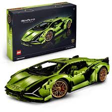

Galeria Lego Technic


Więcej informacji
Aby dowiedzieć się więcej o zestawach Lego Technic,odwiedz stronę Lego:
Lego Technic - Strona OficjalnaLego Technic to seria zestawów konstrukcyjnych Lego, która została wprowadzona w 1977 roku. Zestawy Lego Technic umożliwiają budowanie bardziej skomplikowanych modeli, takich jak pojazdy, maszyny i roboty, za pomocą specjalnych elementów, takich jak koła zębate, silniki czy układy pneumatyczne. Dzięki tym zestawom użytkownicy mogą rozwijać swoje umiejętności inżynierskie i techniczne, tworząc modele działające na zasadzie mechanizmów. Lego Technic stało się symbolem zaawansowanej technologii i precyzji w świecie klocków Lego.
Aby dowiedzieć się więcej o zestawach Lego Technic,odwiedz stronę Lego:
Lego Technic - Strona Oficjalna